Home Credit Default Risk
Background
I have always been fascinated by the concept of feature engineering. The technique of manipulating the input to improve machine learning performance. Especially feature selection methods, the fact we can reduce the number of inputs, decrease noise, and increase performance is just mind-blowing.
The concept had been tingling in the back of my mind then, therefore on a Sunday night, I decided to choose a data set and start this project.
The following is my attend to dive into and understand more about feature selection, how significant are the results, and how this procedure interacts with different models.
The structures of the project are:
- Data preprocessing
- Employing 5 models as a baseline using stratified cross-validation
- Apply 2 different feature selection methods
- Train on the 2 new sets of feature
- Using t-test to exam the statistical significance of the results.
- Test the new models a private test set
1. Information and data source
The following report is an attempt to predict whether a credit borrower going to default or not. As a companion piece to this report, a jupyter notebook is included, which contains python codes that generate all the relevant information. All files are pushed up to GitHub here, which also has the dataset in it.
The dataset is called Home Credit, from a competition hosted in Kaggle in 2018 with a price of 70,000 dollars. With more than 7,176 Teams, 8,373 Competitors, 131,888 Entries.
The dataset is complicated with many different tables interconnected using primary and foreign keys. The dataset is complicated with many different tables interconnected using primary and foreign keys. For the interest of this report, only the application_train.csv will be used to train the model. Moreover, the official metric to evaluate the models is using AUC (Area Under the ROC Curve). Therefore, the same metric will be used.
2. Data description
The data frame has 307511 rows and 121 columns. The following are the columns' names, and their meaning can be found on Kaggle. Here are some basic descriptions of the features.
Of the 121 columns:
- 65 are float
- 41 are integer
- 16 are object

The huge dataset has a significant amount of missing data. Of the 37,208,831 cells in the credit dataset, the missing cells are 9,152,465, which account for about 24% of the total information. However, these nan values distribute unevenly amount the columns. The following is the histogram of the percentage of missing data counted in every column.
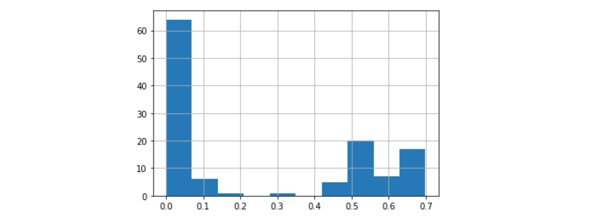
As we can see, some of the attributes included up to 70% nans. This can be a problem later on in our process.
Another mentionable factor discovered when looking at the set is the ratio of the 2 labels.
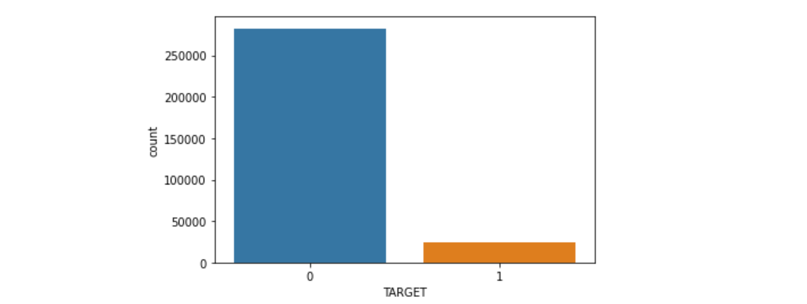
The proportion of Repaid and Not Repaid largely favors the Repaid label. This does reflex the real-world cases since most of the credit borrowers have been vet through a process, therefore, they are likely to pay back the amount than a random sample.
The minority class consist of only 8.07%, the following problem may occur:
- The model only reports on the majority class.
- The accuracy will a bad metric to measure the performance of the models.
- Cross-validation may only subset the majority class by chance.
3. Preprocess
3.1 Drop Id and train test split
Looking into the dataset, it is clear that SK_ID_CURR is an ID for the columns and it should be dropped.
First, we need to split the data frame into 2 parts, one for training and one for testing, with a ratio of 70 to 30 before preprocessing to make sure the information from the train set is not leaked into the test set.
3.2 Handle categorical data
Let deal with the object type data, since they are clearly categorical data. They are usually 2 main approaches to object type information. One is to encode each unique value into a number, second this encodes the columns into sparse vectors. Since I do not want to implies order to the unique cells, the second method is implemented. Pandas has a handy function for this call get_dummies.
A major problem with the dataset is the fact that there no clear distinction between categorical and numeric data. At first glance, the object data is the only categorical columns we have, however, at a closer look, the data contains some attributes that have already been encoded to flag or vector. For example, FLAG_EMAIL is an attribute that has been encoded into zeros and ones.
The description of these columns can be found in the HomeCredit_columns_description file. Unfortunately, it doesn’t help either, the descriptions are vague, and do not go to any helpful information. I suspect that the explanation for this problem is privacy, lots of personal information can be inferred if the description is more clear. Therefore, we have to determine a threshold to separate the categorical and numeric data. This may lead to some miss-match treatment of columns, but for now this the best solution.
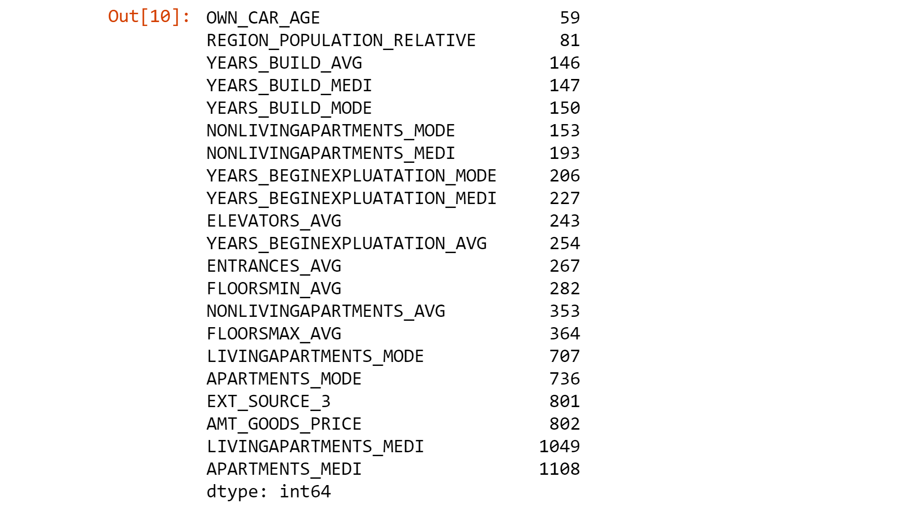
It seems to has a sudden jump in the number of unique values from 364 to 707.
This can be confirmed when we take a look at the line chart produced from the chart
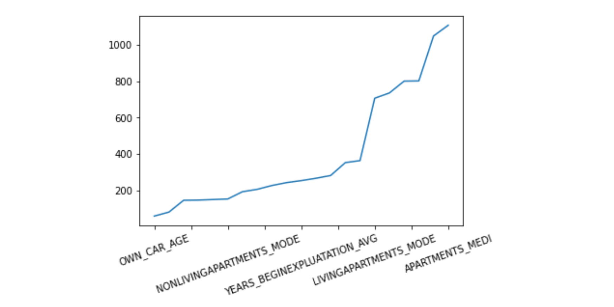
Therefore, I decided to choose the threshold of 403 to be the slipt between the 2 data types. This left us with 35 numerical types.
3.3 Handle outlier
Dealing with outlier is also important to any model, this helps reduces noises from the set and converts the attribute into the expected distribution.We can identify the outliers by using the Three-Sigma Limits, the instances are laid outside of this range from the mean.
Working with an imbalance label like this, dropping all of the outliers is not a reasonable approach here. We may accidentally make the data more under-represented than it ready is. An alternative implemented in this report this to let the 2 tail 3 sigmas be the maximum range from the mean and set the outliers into that range.
A simple pseudo-code:
3.4 Handle missing data
Next is to deal with missing values, the process of getting the sparse vectors already remove nan from the object datatype.
The dataset is populated with abundant nans in various columns, many of these attributes contain more than 50% of these missing values. Simply dropping them may work, but it will significantly reduce, in fact only 2% of the rows remained after dropping all nans. I decided to impute the missing data with its column mean, with the awareness of the action may lead to some inconsistent within the encoded number columns, like flag type.
A more senses able method is to drop the significant nan columns and then using more powerful algorithms like KNN impute to replace missing data. However, since this is the first cycle of the project, I would like to assume these mostly nan attributes contain some critical information for the prediction. Besides, impute with mean computationally least expensive than KNN.
3.5 Normalizing data
Normalizing the data is also important to the models, the process assists the model to easier convert and extract information. They may look act badly if the individual features do not lay within the same range.
There are many different ways to normalize, a standard way is to the mean and standard deviation of the feature to scale it.
Finally, we can apply all the above steps into the testing set with the same imputer, mean, standard deviation.
4. Building models
A custom function is made to apply stratified cross-validation of 10 fold and plot the ROC graph.
4.1 Default models
The following section is training different models using the current dataset.
4.1.1 Logistic Regression (Log)
The logistic regression below is using the default parameters that have been set in the sklearn’s LogisticRegression library
Except for the following parameters:
- random_state = 0
- n_jobs = -1
The result of the cross-validation is the following:
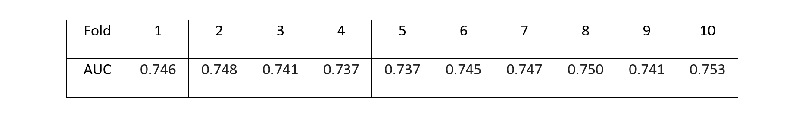
The logistic regression performs relatively well with not much fluctuation between each fold, this indicates that the model is not overfitting the dataset. Although the classifier has been limited to 100 iterations, the process of cross-validation took relatively long to finish.
4.1.2 Random Forest (RR)
The random forest below is using the default parameters that have been set in the sklearn’s Random Forest
Except for the following parameters:
- random_state = 0
- n_jobs = -1
- max_depth = 5
The result of the cross-validation is the following:
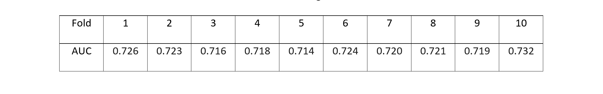
Random forest performance seems relatively worse than logistic regression. Like the logistic regression model still took a considerable amount to run.
4.1.2 Multilayer Perceptron (NN)
The Multilayer Perceptron below is using the default parameters that have been set in the sklearn’s Multilayer Perceptron
Except for the following parameters:
- random_state = 0
- early_stopping = True
- max_iter = 500
The result of the cross-validation is the following:
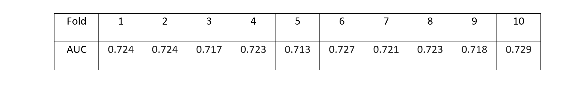
The multilayer perceptron is also a bit worse than Logistic Regression.
4.1.3 Naïve Bayes (GNB)
The Naïve Bayes below is using the default parameters that have been set in the sklearn’s Naïve Bayes
The result of the cross-validation is the following:
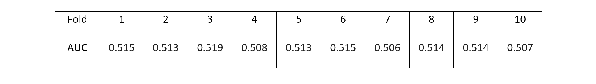
The Naïve Bayes gives the worst values. The algorithm learns nothing, and almost guess random at times. However, it ran relatively fast.
4.1.4 Decision Tree (DT)
The Decision Tree below is using the default parameters that have been set in the sklearn’s Decision Tree
Except for the following parameters:
The result of the cross-validation is the following:
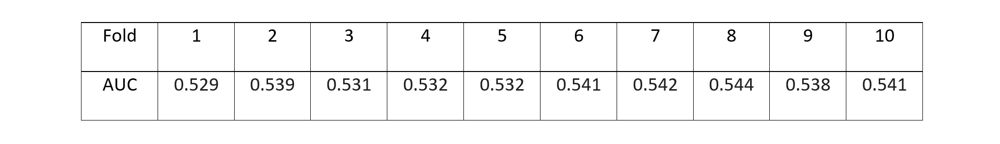
Decision Tree performs more are less same as the Naive Bayes with just a little bit better.
4.1.5 Comparison
The following table contains all of the AUC scores of the 5 models.
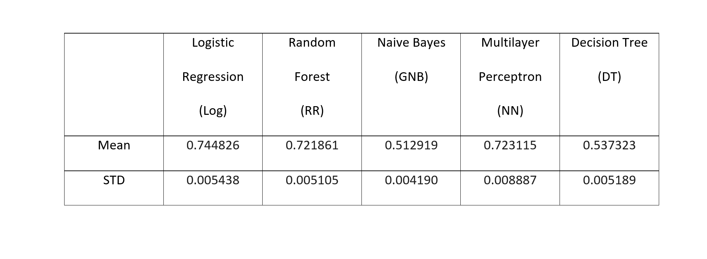
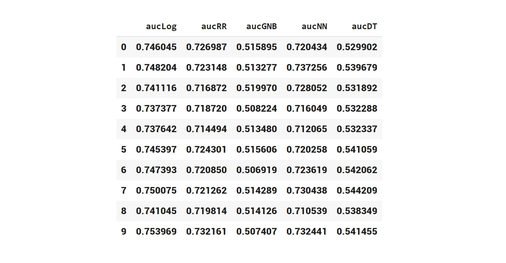
Comparing the mean and standard deviation, it looks to be that Logistic Regression is the best model for this dataset. With a mean of 0.744826, it is completed better than the runner-up, Random Forest, more than 2%. However, we do need to check if this lead has any statistical significance with an alpha of 0.05.
The p-value when applying a related t-test into the 2 sets of cross-validation scores is 3.349861064882038e-09. This is less than the set alpha, which confirms that Logistic Regression statistically the best model.
4.2 Feature Selection using correlation
The following the employing correlation table to filter the most linearly related attributes to the target. After applying the correlation algorithm, the top 3 most important features interestingly are EXT_SOURCE_2, EXT_SOURCE_3, EXT_SOURCE_1.
There is no information about these 3 values, looking into the description, only a brief can be found “Normalized score from external data source”. Again maybe this is done for security pursuits.
Using the top 50 features to train the models, with the same parameters, to raise a below result.
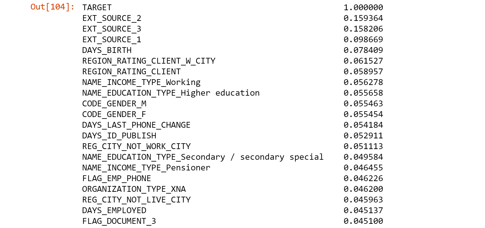
Using the top 50 features to train the models, with the same parameters, to raise a below result.
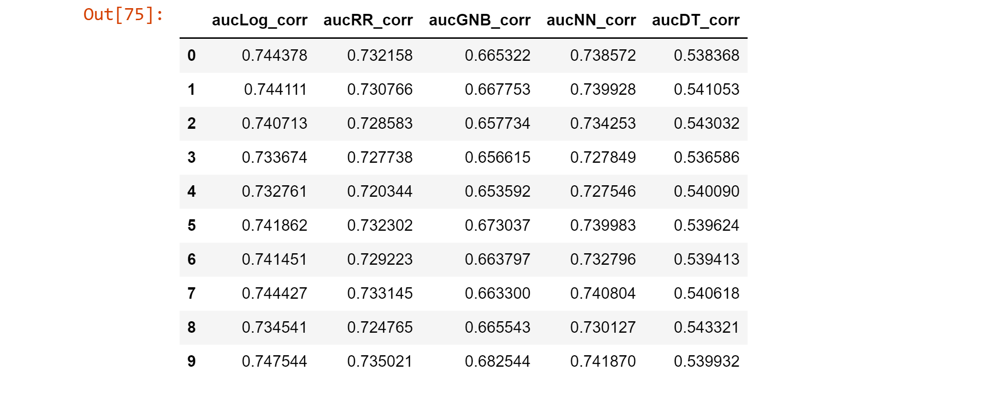
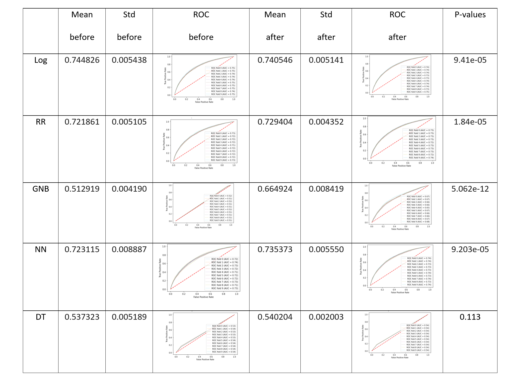
From the table above, 4 of the 5 models are statistically significant, except the decision tree.
The best model, Logistic Regression performed a little bit worse than before, dropped about 0.04 in AUC, this may be the reduction of information.
However, the other 3, RR, GNB, NN, achieve a better AUC thanks to the decrease in noise. Especially the Naïve Bayes model, which increased more than 15% in AUC. Another advantage of selected data is that it reduces the training time tremendously.
4.3 Feature Selection using Random Forest
The random forest model has an ensemble feature selection method that can be used to understand how the model chooses its attribute. It is based on the Gini impurity; the model finds the features that best minimize this number.
When we look that the top columns that random forest point out, again, EXT_SOURCE_2, EXT_SOURCE_3, EXT_SOURCE_1 appear to be the top 3 most important.
Using the top 20 features from the Random Forest to train the models, with the same parameters, to raise the below result.
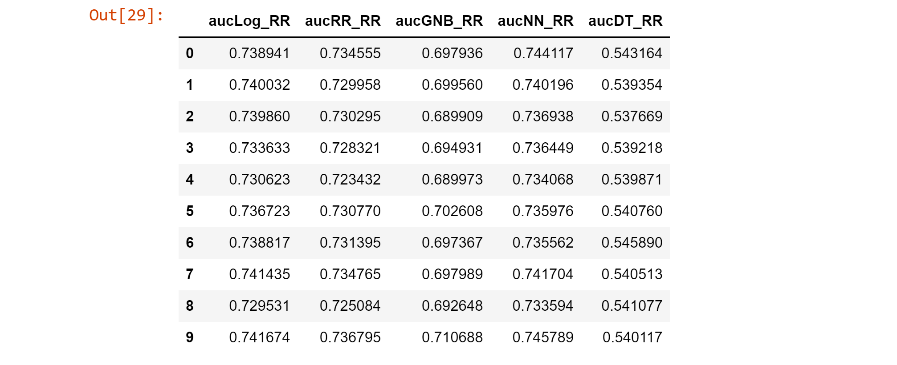
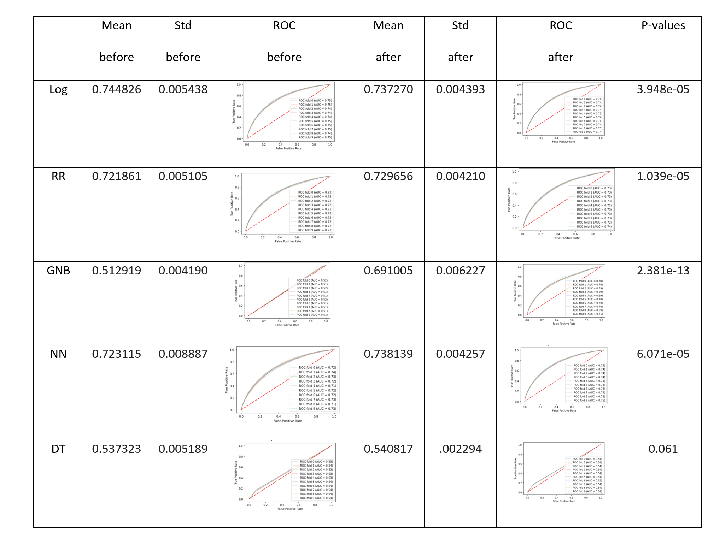
Again, all of the results are statistically significant, except the decision tree. Most of the models, RR, GNB, improved. The best scheme, Log, has its performance decreased about 1%.
4.4 Conclusion
Of the 5 chosen machine learning algorithms, the Logistic Regression has consistently come out ahead, with a score of 0.74 when used in the original data.
Multiplayer perceptron and Random Forest, are the runner-ups, although their AUC is not as high as Log, the training time for these two models is about half the mentioned scheme.
Navies Bayes is interesting that, at first, it only performs a bit better than a random selector. This is may due to a large number of features and noises within the original set.
Finally, the decision tree presented unsustainable with or without feature selection. I believe that the scheme is no suitable for the problem or the default hyper-parameters are not appropriate and need to be changed.
Feature selection, using correlation or ensemble random forest, both help the reduction of training time. By decreasing noises, the method not only helps increase 1 or 2 % in the RR and NN model but up to 18% for NB. My hypothesis is that Log, RR, NN by their implementation do have a way to deal with noise, via L2 regulation in Log and NN, or bootstrap in RR. In contrast, NB accounted for every feature that it has been presented, therefore, feature selection has a noteworthy effect on it.
5. Testing on the test set
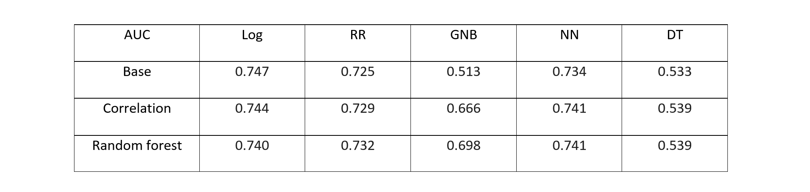